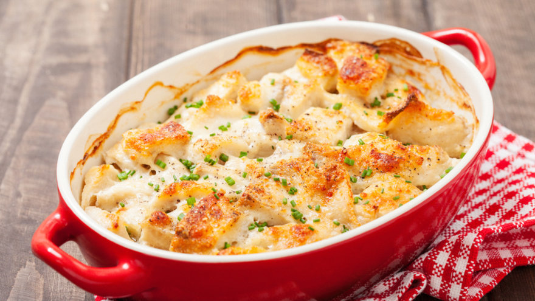

Pastel de Atún
Un pastel bien fácil. Rinde 4-5 porciones aproximadamente.
Pastel de Atún
Un pastel bien fácil. Rinde 4-5 porciones aproximadamente.

Lenguado con mejillones a la crema
Un plato al horno nutritivo, ideal para acompañar con una ensalada.